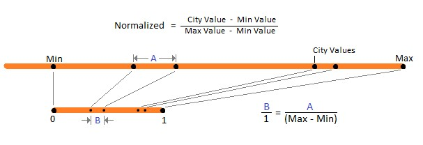

Scoring practice:
From the different indicator data, normalized values between zero and one were calculated for the scores for each indicator. This makes it ideal for comparing and summing indicator scores since the data separation ratio remains the same. Once all scores were calculated, they are then summed for each city to obtain the final score.

Figure 1. Normalization formula used to calculate the indicator scores.
Results:
To view all of the indicator scores for each city, click here.
For the population indicator, Vancouver ranked first with a score of 0.9487, followed by Winnipeg with 0,9154, and Edmonton with 0,8127. The scores agree with the data since these three cities have the smallest population, and therefore tend to have a smaller footprint.
For the waste indicator, Toronto ranked first with a score of 1, followed by Ottawa with a score of 0.9998 and Vancouver with a score of 0.9991. The scores for this indicator are not representative of the data since Winnipeg produced the least waste tonnage yet was ranked last with a score of 0. Differently, Toronto which produced the most waste with 764,839 tons ranked first with a score of 1.
For the travel to work indicator, the scores were the same as its data since they were in percentage. Edmonton ranked first with a score of 0.595 (or 59.5%), followed by Winnipeg with a score of 0.555, and then Ottawa & Toronto tied in third place with a score of 0.5. In this case, the scores did agree with the data.
For the domestic water usage indicator, Edmonton ranked first with a score of 1, followed by Winnipeg with 0.8524, and Ottawa with 0.7997. This indicator also agreed with the data since Edmonton’s domestic water usage is the lowest and ranked first (lower is better for this indicator) and the same phenomena is also seen in Winnipeg and Ottawa.
For the GHG emissions indicator, Vancouver ranked first with a score of 0.961, followed by Winnipeg with 0.9202, and Ottawa with 0.9192. The scores for this indicator agreed with the data since Vancouver produced the least amount of GHG emissions followed by Winnipeg and Ottawa.
For the clean electricity capacity indicator, the scores were the same as its data since they were in percentage. Winnipeg ranked first with a score of 0.91 (or 91% based on the data), followed by Vancouver with 0.9044, and then Ottawa and Toronto tied with 0.7173.
For the recycling diversion rate indicator, the scores were also the same as its data since they were in percentage. Vancouver ranked first with a score of 0.65, followed by Edmonton with 0.52, and Toronto with 0.513.
For the organic waste tonnage indicator, Toronto ranked first with a score of 1, followed by Ottawa with 0.3546, and Vancouver with 0.262. The scores for this indicator agree with the data since the higher organic waste tonnage signifies a better score since the general population tends to throw most of their food to the compost.
For the park count indicator, Toronto ranked first with a score of 1, followed by Winnipeg with a score of 0.8852, and then Ottawa with a score of 0.6345. The score ranking agrees with the data since the more there are public parks in a city signifies more green spaces and locations for recreational activities.
Lastly, for the municipal area, Vancouver ranked first with a score of 1, followed by Winnipeg with 0.86954, and Toronto with 0.8074. The scores for this indicator also agree with the data since these municipal areas of these cities are the lowest, therefore signify to a smaller footprint than a larger city.